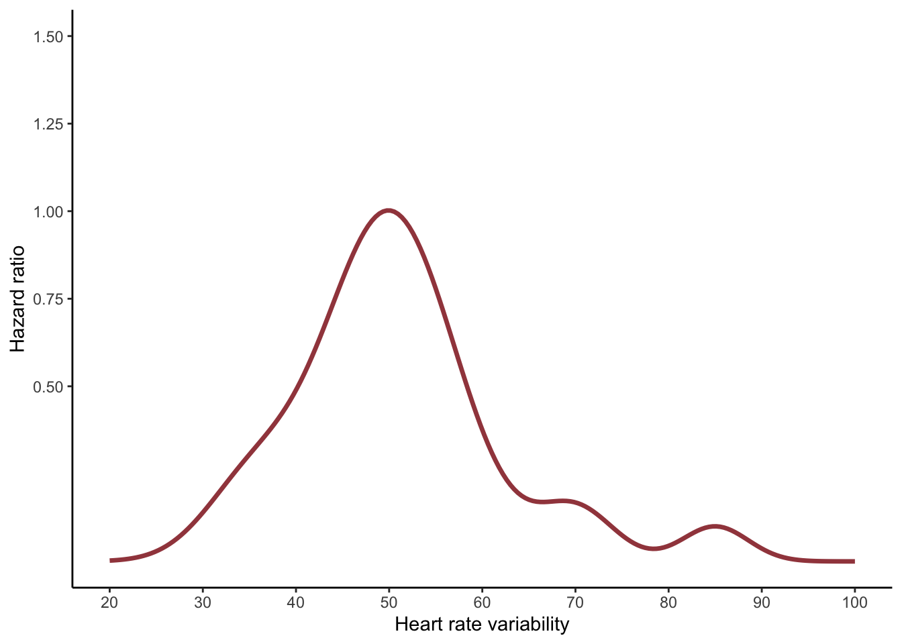

Statistical analysis plan for ADDITION PRO study
Title: Long-term weekly heart rate variability associations with cardiovascular disease in prediabetes – a prospective cohort-study from the ADDITION-PRO
Jonas R. Schaarup1, Lasse Bjerg2, Christian S. Hansen3, Annelli Sandbæk1,2, Dorte Vistisen3,4, Daniel R. Witte1,2
1Department of Public Health, Aarhus University, Denmark; 2 Steno Diabetes Center Aarhus, Aarhus University Hospital, Denmark; 3 Steno Diabetes Center Copenhagen, Copenhagen, Denmark; 4Department of Public Health, University of Copenhagen, Copenhagen, Denmark
ORCID identifier(s)
…….
Corresponding author
Jonas R. Schaarup
Work address: Steno Diabetes Center Aarhus, Palle Juul-Jensens Boulevard 11, Aarhus N, 8200, DK
E-mail: jfrscha@ph.au.dk
Phone number: +45 29936899
Description
Incusion criteria for the participants
Frequencies (percentages) and medians (lower and upper quartiles) will be calculated to describe categorical and continuous variables, respectively. These descriptive statistics will be presented in the table. Table 1 gives an overview of the study population general characteristics (demographic, lifestyle, bio markers). Prevalence and incidence rate of cardiovascular events (myocardial infarction, stroke, and heart failure), will be shown in table 2. Flow of participation will be shown in figure 1.
We will use cox proportional hazard model to investigate the association between heart rate variability indices and hard cardiovascular diseases outcomes (including myocardial infarction, stroke, and heart failure) as well as mortality. We will fit two models. Model 1 will include adjustments of age and sex. In addition to these, Model 2 will include alcohol consumption, smoking behavior, diet, physical activity, education, systolic blood pressure, body mass index, total cholesterol, and Hba1c. The hazard ratio by increase in HRV from the cox models will be presented in table 3. Because of biological differences in sex in the development CVD and women having a lower heart rate variability than men, we want to investigate the stratified association by sex.
To investigate for non-linearity (splines), we included defined knots based on quartiles in HRV distribution. The results from the spline models will by visualized in figure 2.
Complete case analyses will be conducted in the R statistical computing environment (version X).
Tables and Figures
List of variables
| Variables from ADDITION-PRO dataset | |
|---|---|
| Age (years) | |
| Sex (male) | |
| Socioeconomic status | |
| Smoking status | |
| Physical activity (PAEE kj_kg_day) | |
| Alcohol comsuption (units per week) | |
| BMI (kg/m2) | |
| Waist circumference (cm) | |
| Fat percentage ( % ) | |
| Systolic blood pressure (mm hg) | |
| Diastolic blood pressure (mm hg) | |
| HbA1c (%) | |
| LDL cholestorol (mmol/L) | |
| HDL cholesterol (mmol/L) | |
| Triglycerides (mmol/L) | |
| Mean heart rate (bpm) | |
| Median heart rate (bpm) | |
Heart rate variability indices
|
|
Medication use?
|
|
| Variables from DST - cardiovascular disease events | |
| Myocardial infarction | |
| Stroke | |
| Heart failure |
Table 1 Population characteristics by diabetes status
| Study population in ADDITION-PRO | |
|---|---|
| Age (years) | |
| Sex (male) | |
| Socioeconomic status | |
| Smoking status | |
| Physical activity (PAEE kj_kg_day) | |
| Alcohol comsuption (units per week) | |
| BMI (kg/m2) | |
| Waist circumference (cm) | |
| Fat percentage ( % ) | |
| Systolic blood pressure (mm hg) | |
| Diastolic blood pressure (mm hg) | |
| HbA1c (%) | |
| LDL cholestorol (mmol/L) | |
| HDL cholesterol (mmol/L) | |
| Triglycerides (mmol/L) | |
| Mean heart rate (bpm) | |
| Median heart rate (bpm) | |
| Standard deviation of Normal to Normal intervals (ms) | |
| Root mean squared of successive RR intervals (ms) | |
| pNN50 (ms) | |
| SDSD (ms) | |
| High frequency (ms2) | |
| Low frequency (ms2) | |
| Low frequency / high frequency (ratio) | |
| Ultra low frequency (ms2) | |
| Ultra high frequency (ms2) |
Table 2 CVD and mortality incident in study population
| Incidents CVD (cases per 1000 year) | Incidents mortality (cases per 1000 year) | |
|---|---|---|
| All | ||
| 1st tertile HRV | ||
| 2nd tertile HRV | ||
| 3rd tertile HRV |
Table 3 Heart rate variability indices associated with CVD
| Model 1: HR (95% CI) | Model 2: HR (95% CI) | |||
|---|---|---|---|---|
| CVD events | All cause mortality | CVD events | All cause mortality | |
| n=x | n=x | |||
| SDNN (per unit) | 0.xx (0.xx - 0.xx) | 0.xx (0.xx - 0.xx) | 0.xx (0.xx - 1.xx) | 0.xx (0.xx - 1.xx) |
| RMSSD (per unit) | 0.xx (0.xx - 0.xx) | 0.xx (0.xx - 0.xx) | 0.xx (0.xx - 1.xx) | 0.xx (0.xx - 1.xx= |
| High frequency (per unit) | 0.xx (0.xx - 0.xx) | 0.xx (0.xx - 0.xx) | 0.xx (0.xx - 1.xx) | 0.xx (0.xx - 1.xx) |
| Low frequency (per unit) | 0.xx (0.xx - 0.xx) | 0.xx (0.xx - 0.xx) | 0.xx (0.xx - 1.xx) | 0.xx (0.xx - 1.xx) |
| mean HR (per unit) | 0.xx (0.xx - 0.xx) | 0.xx (0.xx - 0.xx) | 0.xx (0.xx - 0.xx) | 0.xx (0.xx - 0.xx) |
Figure 1
Flow chart
Figure 2 (example)